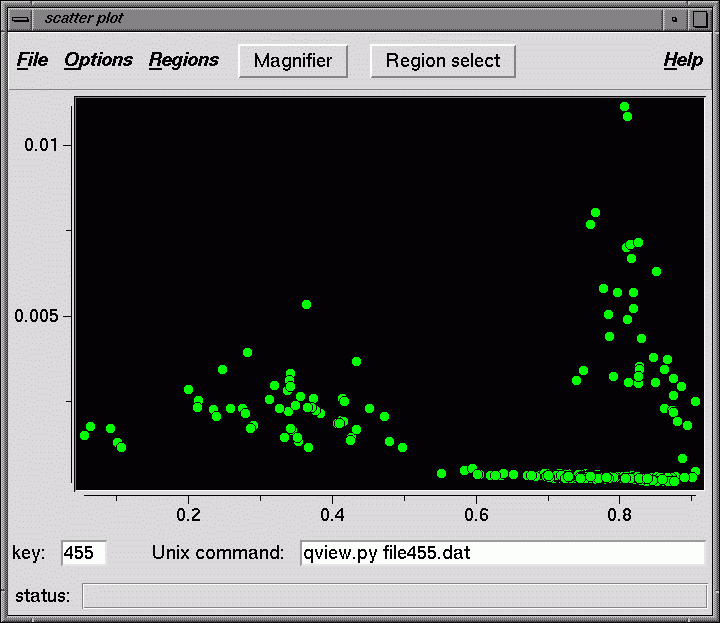

Scatter plot of data points - scatter.py
Display a scatter plot using two columns from a Spider document file as the X and Y axes.
Usage: scatter.py docfile [x y]
where x,y specify which SPIDER docfile columns to plot.
(1 = first data column, 0 = keys)
Each plotted point is associated with a key number from the doc file.
This key number is used to specifiy a file number in the Unix command that
is invoked when a point is double clicked.

Modes
There are three modes of operation that affect the mouse cursor:
- Normal : as the mouse cursor is moved over points, the
corresponding key is displayed in the key box, as well as substituted
into the Unix command text string. If a point is double clicked,
the Unix command is executed.
For example, if each point corresponds to an image, you can display the image
by in the qview program clicking on its point if the Unix command is
qview.py img001.dat. xv or some other display program will also work,
as long as the Unix command is legal. If each point corresponds to a class, then you
could use the command classavg.py class001.dat.
If any polygons have been drawn around points, the currently selected polygon is
shown in yellow, the others are blue. Polygons are selected by clicking on their outlines.
- Magnifier : the Magnifier button at the top is green when in this mode.
In Magnifier mode, use the left mouse button to select a rectangle - the screen zooms
in on this area. Reset the view under Options - Reset view.
Magnifier mode is toggled on/off by clicking the Magnifier button.
- Region select : the Region select button at the top is green
when in this mode. In this mode, you can outline a polygon with the left
mouse button, finishing the polygon with right mouse button. The left mouse
button will continue to draw polygons until Region select mode is turned off
by clicking the Region select button.
Menus
- File
- Open : Open a document file. The first few lines of the file are displayed.
The user specifies which columns to use for the X and Y axes, as well as labels
for each axis.
- Options
- Magnify : Turns Magnifier mode on/off
- Reset view : Resets the original view, if any region was enlarged using the Magnifier.
- Symbols : Allows you to change symbol shapes and colors.
- Regions
- Polygon select : Turns Region select mode on/off
- Save selected polygon : Saves the points inside the currently selected polygon (yellow) to a doc file. The user is prompted for a doc file name, the key numbers and x,y coordinates are written to disk.
- Delete selected polygon : Removes the currently selected polygon.
Back to index